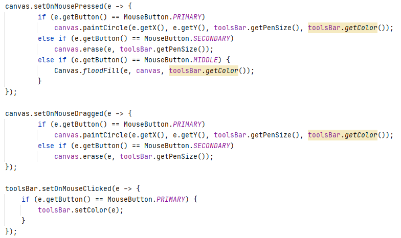
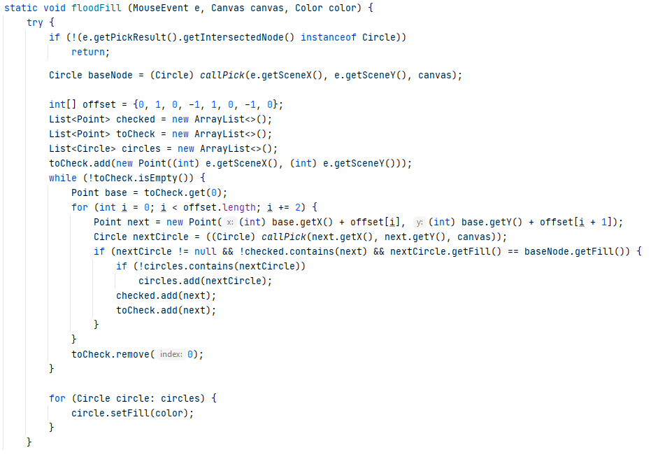

A simplified version of the Microsoft Paint application in Java. Utilized JavaFX GUI and various
JavaFX shapes, paints, MouseEvents, and collections to achieve functional drawing application with
options to choose paint color, brush size, use paint bucket and erase.
The GUI is constructed from a base of a JavaFX BorderPane object. BorderPanes allow one to set the
different sections (Top, Bottom, Left, Right, Center) of the pane with different objects. On this BorderPane there
are two custom JavaFX objects. The center painting area of the screen is a custom Canvas object which is
extended from the basic JavaFX Pane class. The top portion of the screen is a custom ToolsBar object which is
extended from the JavaFX HBox class. Within the ToolsBar there is another custom ColorPalette object which is
extended from the JavaFX GridPane class.
The Main class extends the JavaFX Application class which is the entry point for any JavaFX application.
In JavaFX a Stage is the top level JavaFX container. This stage must be set with the different elements
of the JavaFX program and then made to be visible to the user.
The stage is set by first creating a BorderPane and setting the center to a Canvas object and the
top to a ToolsBar object. Then a JavaFX Scene object is created with the BorderPane and the dimensions
of the scene.The JavaFX Scene is another container that holds the content that is to be added to the
application's Stage. Finally the scene is set in the primaryStage which adds all the elements of the
application to the GUI to be displayed to the user.

The Main class also has the logic for the mouseEvents which control the program. When the Canvas is
left clicked, circles are painted where the cursor is with the current pen size and color. When the Canvas
is right clicked, the erase function is called creating circles the color of the background. When the Canvas
is clicked with the middle mouse button, the "Paint Bucket" tool is called and all circles of the same color
that are adjacent to the one clicked will be changed to the current pen color. The Canvas also responds to
mouse drags with the left and right mouse button the same as it does for clicks. When the ToolsBar is
clicked, the program attempts to identify which color the user clicked on from the ColorPalette. If the
user clicks on either one of the other buttons or text fields in the ToolsBar or anywhere not on the
ColorPalette, the pen color is unaffected. This functionality is set up like this because the ColorPalette
is the only custom object in the ToolsBar that needs its clicking functionality coded; the button and
text field work on their own when they are clicked.

The ToolsBar extends the JavaFX HBox. The HBox is a pane that displays its children in a single
horizontal row. The ToolsBar arranges the elements in the order they are added in the
getChildren().addAll() method.
The first element is the clear button which clears all the children from the canvas essentially
wiping the canvas clean.
The next two elements are the text field box and its label for controlling the pen size,
defaulted to 8.
The final element of the ToolsBar is the custom ColorPalette object which displays 8 different
colors to choose from as the color for the pen.


The ColorPalette extends the JavaFX GridPane. The GridPane is a pane that displays its children
in a flexible grid of rows and columns. The various colors are displayed as rectangle objects with
different colors. These rectangles are added to the ColorPalette and displayed for the user to
choose from. When the user clicks on a colored rectangle, the color of the rectangle is checked
and that color is set as the current pen color which is stored in the ColorPalette object. I chose
to use the basic rainbow colors plus black and white to have a well balanced default palette.
The Canvas is where the actual "painting" takes place. The Canvas is extended from the basic JavaFX
pane class as this class is the most flexible in terms of placing objects anywhere on the pane. The
Canvas contains much of the logic for the program, most importantly the method for paintCircle which
simply creates a circle based on an X and Y location and the current pen size and color. The erase method
creates a circle the color of the background with the current pen size. Erasing is done by holding
down the right mouse button. One alternative to creating circles the color of the background would be
to delete any circles that are clicked on while holding down the right mouse button. This approach
seems to be popular with other simple paint-like programs especially ones embedded in a program for
which "painting" is not the main goal. Some examples are Windows' Snipping Tool pen and eraser and
Microsoft Edge's PDF editing pen and eraser.

The Canvas also holds the logic for the "Paint Bucket" tool which is done by clicking the middle
mouse button. The floodFill method has the most complex logic of the entire program as it must not
only determine which circle you are trying to click on, but must also color all adjacent circles
of the same color iterably. Picking the right circle that the user is attempting to click on proved
difficult because the computer must know which circle at the given coordinates is on the "top" of
the GUI even if there are multiple circle objects on the specified X and Y coordinates. Once the
correct circle is chosen, the color is retrieved and all circles that are touching the clicked circle
and are the same color are added to a List of circles to be changed. Those circles who were adjacent
to the original circle then also have their neighbors checked to see if they are the same color. This
continues until there are no more circles to check and all the neighboring circles of the same color
are then changed to the current pen color.
